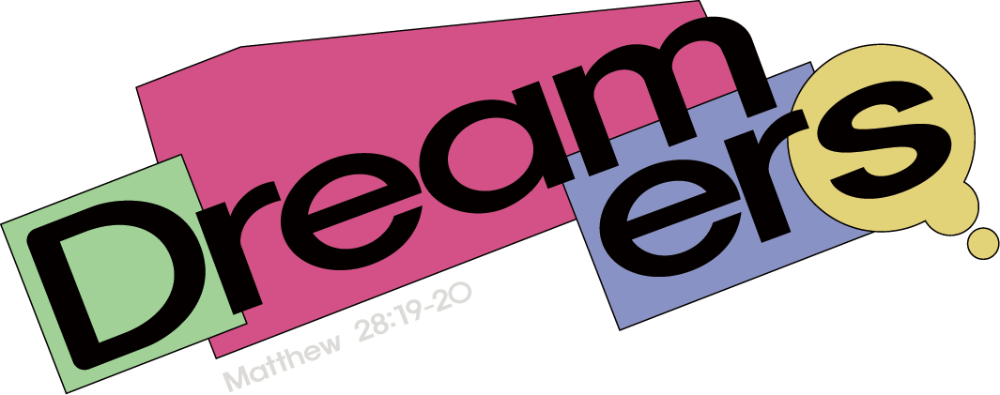

| 수신 | 김완진 교수님, 서덕수 교수님 |
|---|---|
| 발신 | 2026 한동대학교 창문축제 TFT 무대운영팀 |
| 일시 | 2026년 11월 4일(수) 20:00 ~ 21:00 (60분) |
| 장소 | 한동대학교 평봉필드 특설무대 및 평봉필드 |
| 제안 내용 | 토크쇼 〈BACK TO ’95〉 패널 출연 |
존경하는 교수님, 안녕하십니까. 2026년 한동대학교 창문축제의 무대 프로그램을 준비하고 있는 축제 TFT 무대운영팀입니다. 올해 축제에서 저희는 한동이 처음 세워지던 1995년의 이야기를 오늘의 학생들에게 다시 들려드리고자 합니다. 그리고 그 이야기를 가장 진실하게 전해 주실 수 있는 분이 한동의 시작을 학생으로 경험하시고, 지금은 교수로서 한동의 오늘을 지키고 계신 두 분 교수님이라고 믿습니다. 이에 축제 토크쇼 〈BACK TO ’95〉의 패널로 두 분 교수님을 정중히 모시고자 이 제안서를 올립니다.
BACK TO ’95는 한동대학교가 ‘하나님의 대학’으로 세워진 1995년에 입학한 선배 동문을 초청하여, 한동의 시작과 그 안에 담긴 꿈과 비전을 함께 나누는 축제 토크쇼입니다. 무대 위에서 일방적으로 과거를 회상하는 강연이 아니라, 한동의 시작을 살아낸 선배와 지금의 한동을 살아가는 학생이 직접 만나 대화하는 자리로 기획하였습니다.
토크쇼, ’95 퀴즈와 무대 인터뷰, 학생들이 미리 보낸 ‘꿈’에 관한 사연 나눔으로 이어지는 60분 동안, 교수님께서 들려주실 1995년의 장면들은 2026년 학생들의 고민과 만나 한동의 과거·현재·미래를 하나로 잇는 대화가 될 것입니다.
“한동의 꿈은 결국 하나님께서 한동을 세우신 의도, 즉 하나님의 꿈이다.”
1995년의 한동은 건물 한 동이 서 있는 땅에서 시작되었다고 전해집니다. 갖춰진 것은 많지 않았고, 겉으로 보기엔 작고 초라했을지도 모릅니다. 그러나 바로 그곳에서 첫 한동인들은 서로의 꿈을 나누고 한동의 비전을 함께 품으며 오늘의 한동대학교를 일구어 왔습니다. ‘꿈을 꾸고, 그 꿈을 함께 이루어 가는 문화’는 그렇게 시작되었습니다.
그로부터 서른한 해가 지난 지금, 한동의 학생들은 진로와 취업, 성적과 비교 속에서 ‘무엇을 꿈꾸는가’보다 ‘어떻게 살아남을까’를 먼저 묻고 있습니다. 저희는 이 질문의 자리에 한동의 첫 이야기를 다시 놓고자 합니다. 본 프로그램의 기획 의도는 다음과 같습니다.
두 분 교수님은 한동의 첫 신입생으로서 그 시작을 몸소 경험하셨고, 이제는 강의실에서 매일 지금의 한동 학생들을 만나고 계십니다. 한동의 ‘처음’과 ‘지금’을 모두 아시는 분은 많지 않습니다. 학생들에게 교수님은 늘 강단 위의 스승이셨지만, 이번 무대에서는 같은 캠퍼스에서 같은 고민을 먼저 지나온 선배로 만나 뵙고자 합니다. 교수님의 스무 살 이야기는 어떤 강연보다 학생들의 마음에 깊이 닿을 것이라 확신합니다.
| 시간 | 소요 | 내용 | 교수님 참여 |
|---|---|---|---|
| 20:00 ~ 20:05 | 5분 | 오프닝 및 출연자 소개 (사회자가 교수님 관련 퀴즈로 소개 후 무대로 모심) | 입장 |
| 20:05 ~ 20:17 | 12분 | 토크쇼 ① 학창 시절, 한동에서의 경험 | 토크 |
| 20:17 ~ 20:27 | 10분 | 토크쇼 ② 95학번 동문들은 어떤 꿈을 가지고 한동에 왔을까? 지금은 어떤 꿈을 꾸고 있을까? | 토크 |
| 20:27 ~ 20:37 | 10분 | ’95 QUIZ 및 인터뷰 (초창기 한동 관련 퀴즈 5문항, 정답자와 교수님의 무대 인터뷰) | 인터뷰 |
| 20:37 ~ 20:57 | 20분 | 관객 질문 및 사연 소개 (‘한동에 처음 왔을 때의 꿈’, ‘현재의 꿈과 고민’ 사연에 대한 답변) | 응답 |
| 20:57 ~ 21:00 | 3분 | 클로징 및 관객 소감 작성(QR코드) | 퇴장 |
※ 토크쇼의 전반적인 진행은 사회자가 맡으며, 우천 시에는 특설무대에 캐노피를 설치하여 진행합니다.
| 항목 | 내용 |
|---|---|
| 사전 미팅 | 10월 중 교수님 일정에 맞춰 30분 내외로 진행 방향과 토크 주제를 함께 협의 |
| 질문지 사전 전달 | 토크쇼 질문과 선별된 사연을 미리 전달드려 부담 없이 준비하실 수 있도록 함 |
| 추억의 자료(선택) | 1995년 무렵의 사진이나 물품을 빌려주시면 무대 화면 및 소품으로 활용 |
| 당일 일정 | 2026년 11월 4일(수) 20:00 ~ 21:00, 평봉필드 특설무대 |
교수님께서 들려주실 1995년의 이야기가 2026년의 한동인에게 가장 큰 축제의 선물이 될 것입니다. 바쁘신 가운데 귀한 시간을 내어 주시기를 간곡히 부탁드립니다.
2026. 10. 08.
2026 한동대학교 창문축제 TFT 무대운영팀
담당자: 이이삭 / 연락처: 010-3088-1691 / 이메일: 22300576@handong.ac.kr